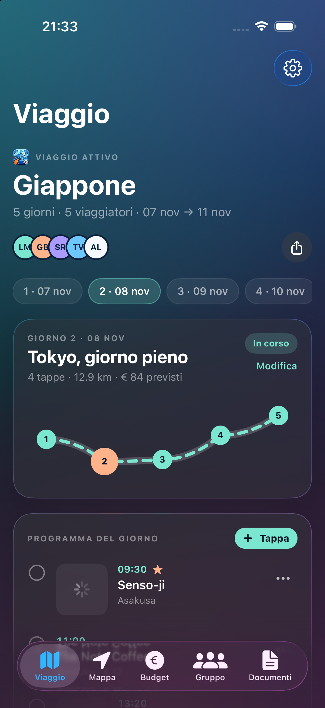

01
Invita il gruppo
Un link e tutti inside. Ognuno vede lo stesso piano, in tempo reale.
TRIPLAN · YOURTRIP — VIAGGI DI GRUPPO
Itinerario, budget, prenotazioni, documenti e mappa. Un solo posto, con tutte le persone che viaggiano con te.
01 / IL MONDO TI ASPETTA
Un piano per ogni posto. Scegli tu dove andare, il gruppo si occupa del resto.


Foto a scopo illustrativo · i viaggi mostrati sono dimostrativi.
02 / UN SOLO POSTO
La spina del viaggio: ogni tappa è un nodo con orari, tempi e percorso. Cambi idea? Si aggiorna per tutti.
Spese, valute e divisione tra viaggiatori. Sempre collegato alle scelte del gruppo.
Voli, hotel, treni e biglietti in un unico archivio. Niente più email da cercare la notte prima.
Il percorso del giorno e quello completo, anche in 3D. Con la ricerca luoghi e le indicazioni.

L'app vera, non un mockup.
03 / SMART PLANNING
YourTrip suggerisce il momento migliore per ogni tappa e mostra la prova: affollamento, distanza, tempo risparmiato. Tu decidi, il gruppo vede subito.
PROVA · affollamento −38% · percorso −1,4 km
04 / COME FUNZIONA
Un link e tutti inside. Ognuno vede lo stesso piano, in tempo reale.
Voti, proposte e aggiornamenti live. Nessuna scelta resta in una chat.
Itinerario, mappa e documenti in tasca. Anche senza rete.
05 / INSIEME
Chi ha pagato cosa, chi deve a chi, chi è d'accordo su cosa. Tutto chiaro, senza discussioni a tavola.
Apri in TestFlightScarica YourTrip su TestFlight e crea il tuo primo piano con chi viaggia con te.
Inizia ora iOS e iPadOS · versione 1.0 · TestFlight